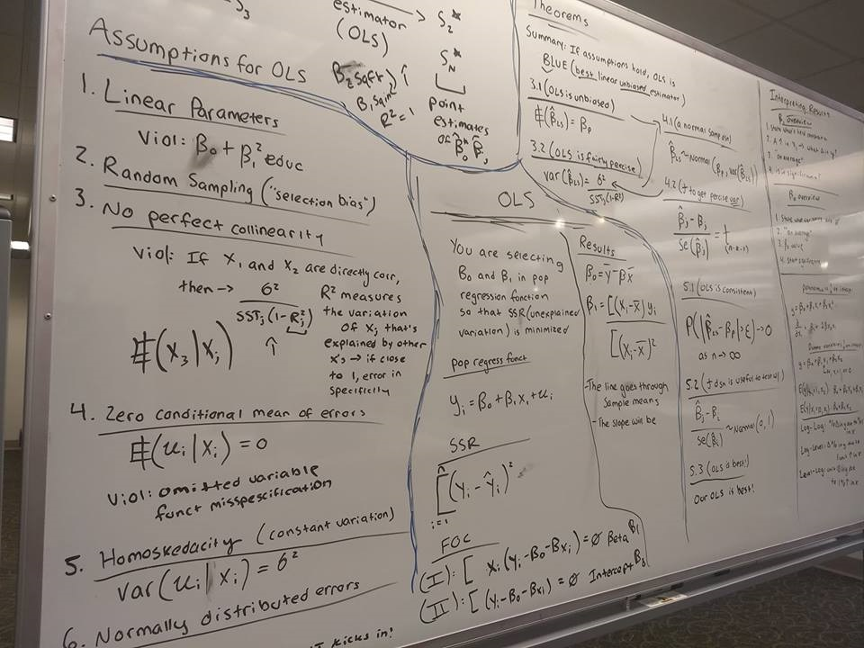
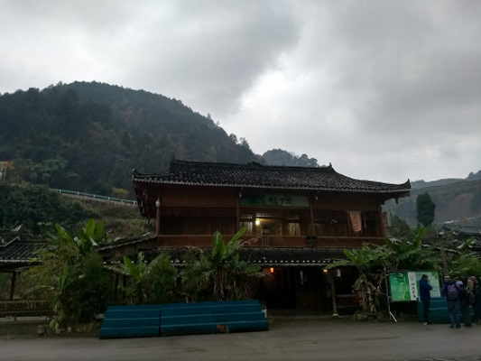

Aaron Phalin
Link to Formal ResumeContact me at my LinkedIn Account , email (aphalin11@gmail.com), or cellphone (773-558-8596).

Using Learning to Teach

Model-Builder

Interdisciplinary Passion-Follower

Problem-Solver